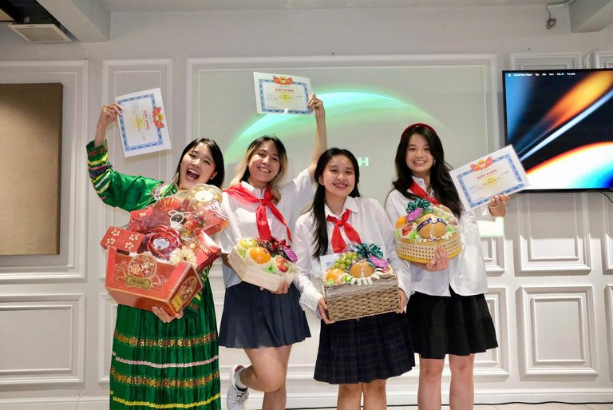
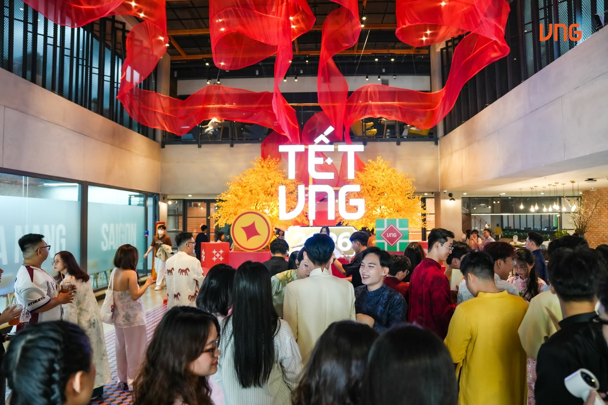
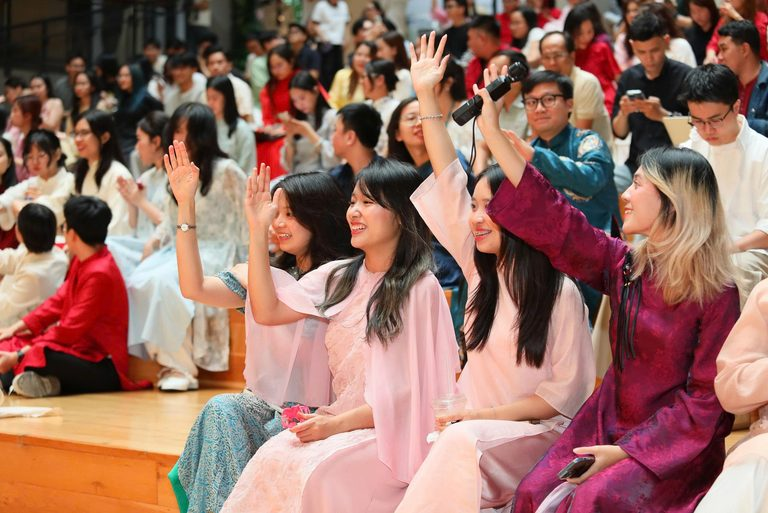
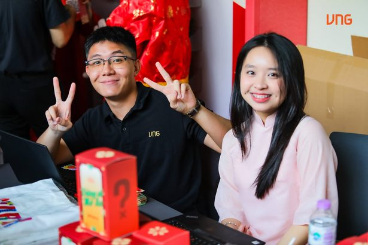
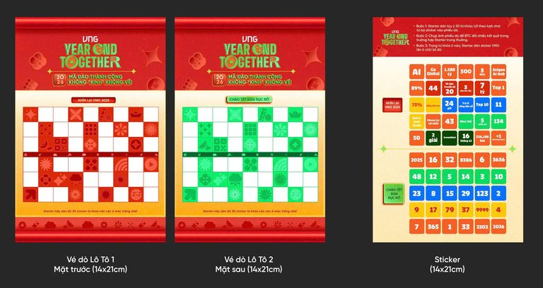
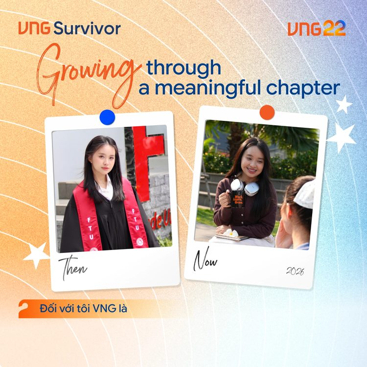
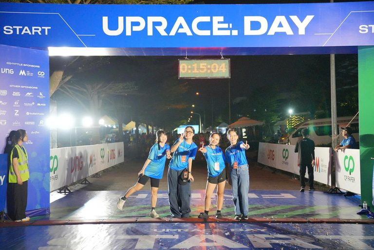
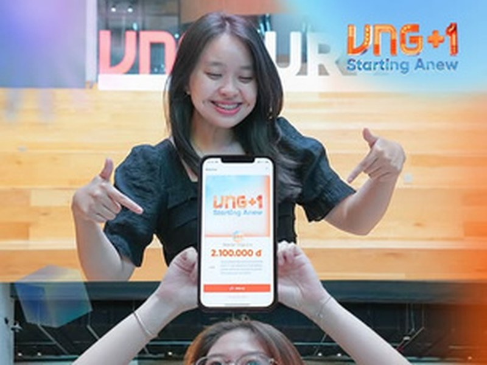
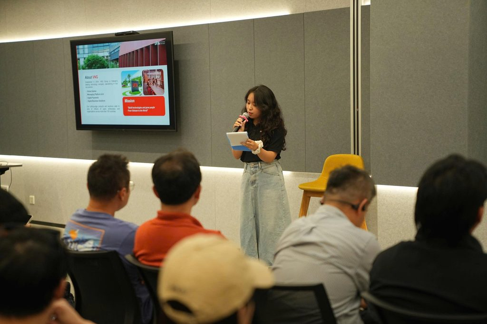

images/ee-teambuilding.jpgTeam-building
Co-planned and helped run internal team-building activities.
Case study · VNG Group · People Experience
With around 4,000 employees at VNG, every internal event is a chance to create meaningful experiences at scale.

images/engagement-hero.jpgVNG runs 4 large-scale internal events a year. I took on a different role in each one, which helped me understand every side of an event, from concept and materials to onsite flow, and how each part shapes the employee experience.
Event 01
VNG's company celebration to welcome Tết.
2,000+
employees joined the event

images/yet-1.jpg
images/yet-2.jpg
images/yet-3.jpgEvent 02
100+
“Survivors”: employees who have stayed 10, 15 and 20 years

images/birthday-ugc.jpg
images/ee-teambuilding.jpgCo-planned and helped run internal team-building activities.

images/ee-uprace-day.jpgSupported onsite operations at UpRace Day 2025 and Family's Day 2026.

images/ee-content.jpgContributed ideas to Life@VNG TikTok and supported 10+ internal communications.

images/ee-mc.jpgHosted small internal workshops as MC, and wrote scripts for tours and event segments.